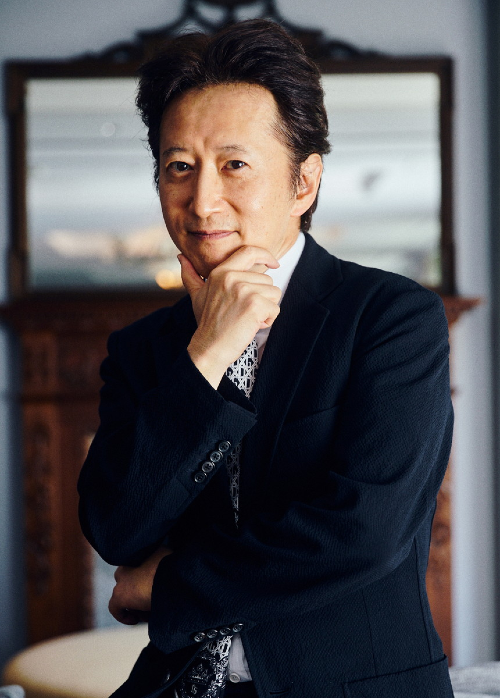
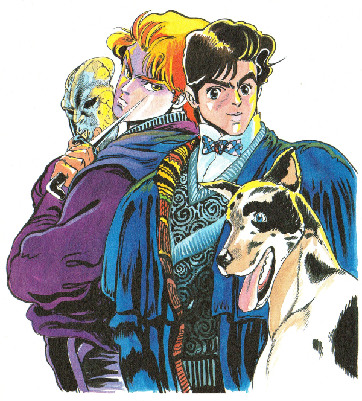
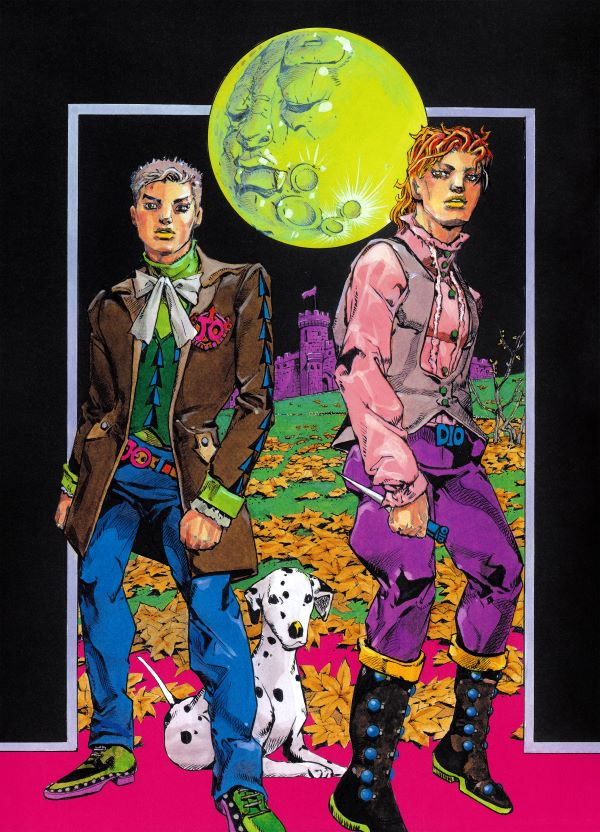
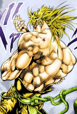
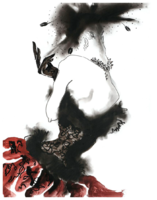

Hirohiko Araki is a highly acclaimed Japanese manga artist and the creator of the iconic manga series "JoJo's Bizarre Adventure." Born on June 7, 1960, in Sendai, Miyagi Prefecture, Japan, Araki has become one of the most influential figures in the world of manga and anime.
Hirohiko Araki

This is Hirohiko Araki
The Plot of JoJo Bizarre Adventure
"JoJo's Bizarre Adventure" is an expansive and multifaceted manga series created by Hirohiko Araki. It spans multiple story arcs, or "Parts," each with its own distinct protagonist, setting, and narrative themes. The series blends elements of action, adventure, horror, and fantasy with a healthy dose of surrealism and over-the-top creativity.
Part 1: Phantom Blood
Follows Jonathan Joestar's life and his conflict with the cunning Dio Brando, who becomes his adopted brother.
Late 19th century England

Jonathan Joestar is on the right, Dio Brando is on the left, and Danny is the dog.
Artwork
Hirohiko Araki's artwork is special due to its distinctive style, dynamic composition, meticulous attention to detail, innovative storytelling techniques, continual evolution, and iconic character designs.
Hirohiko Araki Quote about his Art
Araki thus seems to have succeeded in creating a sense of contemporariness and reality that directly links to the world we live in by incorporating elements from philosophy, economy, and the natural sciences. “When you draw a tree, it ends up looking weird if you don’t thoroughly observe how the branches are attached. To draw is, in that sense, something like a chemical experiment. In many ways, I learn by drawing. My ideal is to portray the world of JoJo based on an idea or theory that unifies everything from the natural sciences, to philosophy and economy. Manga pertains to fantasy, to the fictional. But when it is drawn based on a unified idea or theory, the characters, in a strange way, begin to feel as though they truly exist there. That’s what’s really fun, and that’s what I always seek when I draw.”

Art by Hirohiko Araki 2024 for the Phantom Blood Musical
References in Hirohiko Araki's Artwork
Hirohiko Araki uses references in his artwork to enhance realism, provide cultural context, pay homage to influences, aid in world-building, develop characters, and draw inspiration for his creative process.
Hirohiko Araki draws inspiration from a wide range of sources for his work, incorporating references that span various disciplines, cultures, and time periods.
Fashion: Araki is known for his keen interest in fashion, and his characters often sport elaborate and stylish costumes inspired by haute couture, street fashion, and historical clothing trends.
Art History: Araki frequently references art history in his illustrations, drawing inspiration from master artists such as Michelangelo, Leonardo da Vinci, and Gustav Klimt. He incorporates elements of classical art styles and motifs into his manga, adding layers of visual richness and sophistication to his compositions.
Music and Pop Culture: Music plays a significant role in Araki's creative process, and he often references songs, bands, and musicians in his work. Additionally, he draws inspiration from a wide range of pop culture phenomena, including films, television shows, and literature.
Overall, Hirohiko Araki's work is characterized by its eclectic blend of references, which he masterfully weaves together to create immersive and multi-layered narratives that resonate with audiences worldwide.


Example of Hirohiko Araki References, Nina Ricci Haute Couture, 1984, Tony Viramontes
My favorite art of Hirohiko Araki
I love Hirohiko Araki's art style; he is by far my favorite manga artist!